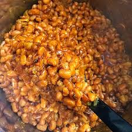

How to make a Nigerian Bean Porridge

Description
Nigerian bean porridge is made using a “Honey Beans”
Honey beans can be found in West Africa
Ingredients
- Honey beans
- Palm Oil
- Tomatoes
- Red onion
- Bell pepper
- Ground Shrimp
- Salt to taste
Steps
- Rinse the beans and place in a deep pot
- Boil the beans on medium heat until it becomes soft
- While the beans is boiling,blend the tomatoes,peppers,and onions
- Once the beans are softened from boiling,add the blended tomatoes to it
- Allow the beans to cook for additional 10 minutes, then add the crayfish, salt and other seasonings you might prefer
- Turn off heat and let cool before serving
Back to Home